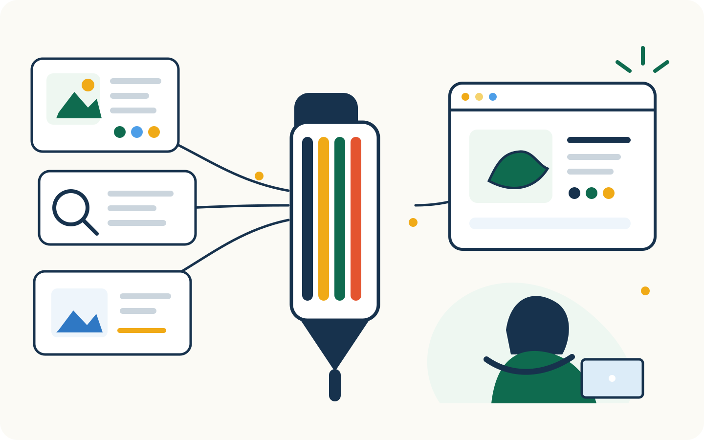

Less busywork
Keep content, SEO, images, product details, merchandising, review, and publishing in one connected workflow.
ABOUT PENSTACK
penstack exists to reduce the repetitive work between “the product exists” and “the product is ready to sell,” without taking the judgment, creativity, or product knowledge out of your hands.

BUILT FROM THE WORK
After years working across product, marketing, customer experience, and ecommerce, I kept seeing the same pattern. The strategy and creative decisions were not usually the problem. It was everything between having the product and having a complete, accurate listing ready to publish.
Descriptions. SEO. Images. Product details. Tags. Collections. Review. Moving information between tools. Rebuilding context that already existed.
None of it seemed enormous on its own. Together, it could swallow hours.
penstack grew out of wanting those hours back, first for myself, and then for other people doing the same work.
The goal is not to replace the judgment, creativity, or product knowledge that makes the work good. It is to spend less of your time on the repetitive middle so you can put that time somewhere better.
WHY PENSTACK EXISTS
The blank page is only one part of the job. penstack is built around the messy middle that turns product information into a complete Shopify listing.
Keep content, SEO, images, product details, merchandising, review, and publishing in one connected workflow.
Reuse relevant product, search, and store context instead of rebuilding it every time.
Nothing goes live until you review the work and decide what is ready to publish.
WHAT GUIDES THE PRODUCT
AI prepares the work. You review, edit, and decide what gets published.
Descriptions, SEO, images, product details, and merchandising are treated as one product journey.
Start from existing Shopify product information instead of rebuilding useful context from scratch.
Designed for solo merchants, growing teams, and multi-store operations without turning penstack into another place to manage work.
THE PRODUCT PHILOSOPHY
Rebuild context. Prompt. Copy. Paste. Rename. Organize. Check. Switch tabs. Repeat.
Retrieve. Build. Review. Publish. Keep your attention on the parts that require actual judgment.
WHAT WE ARE TRYING TO GIVE BACK
Think about what to launch, how to position it, and what customers actually need.
Spend energy on the brand, the product, the campaign, and the work only you can do.
Efficiency should not always become another task. Sometimes getting the work done faster should simply mean being done.
CONTACT
If you have a product question, feedback, a partnership idea, or something in the workflow that is getting in your way, reach out. penstack is still close to the people using it.
START WITH ONE PRODUCT YOU KNOW WELL
Prepare the work, review the result, and publish only the changes you approve.
Start free → No credit card required.